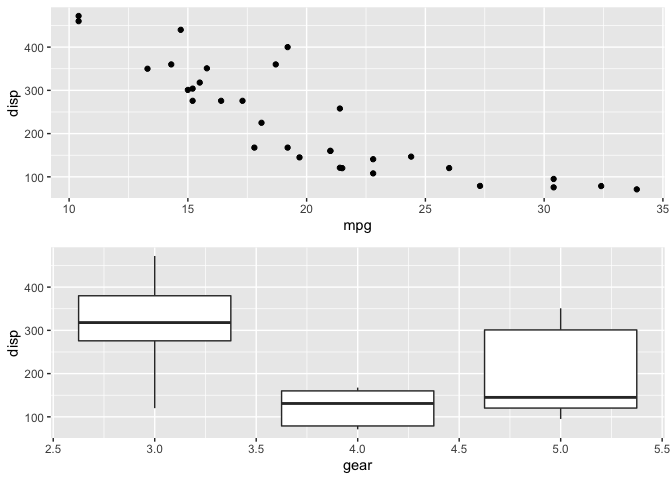
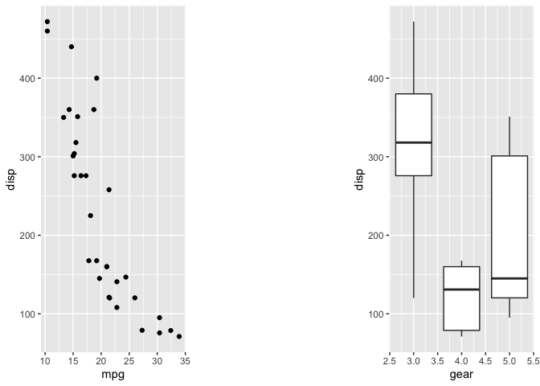
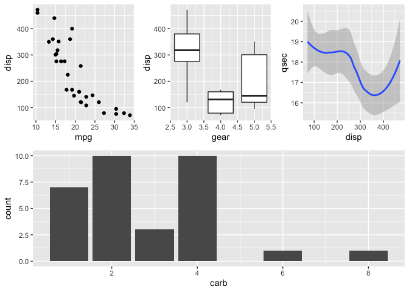

The goal of patchwork is to make it ridiculously simple to combine separate ggplots into the same graphic. As such it tries to solve the same problem as gridExtra::grid.arrange() and cowplot::plot_grid but using an API that incites exploration and iteration.
Basic example
The usage of patchwork is simple: just add plots together!
library(ggplot2)
library(patchwork)
p1 <- ggplot(mtcars) + geom_point(aes(mpg, disp))
p2 <- ggplot(mtcars) + geom_boxplot(aes(gear, disp, group = gear))
p1 + p2
You are of course free to also add the plots together as part of the same plotting operation:
ggplot(mtcars) +
geom_point(aes(mpg, disp)) +
ggplot(mtcars) +
geom_boxplot(aes(gear, disp, group = gear))
Layout and nesting
Layouts can be specified by adding a plot_layout() call to the assemble. This lets you define the dimensions of the grid and how much space to allocate to the different rows and columns.

If you need to add a bit of space between your plots you can use plot_spacer() to fill a cell in the grid with nothing.

You can make nested plots layout by wrapping part of the plots in parentheses. In this case the layout is scoped to the different nesting levels.
p3 <- ggplot(mtcars) + geom_smooth(aes(disp, qsec))
p4 <- ggplot(mtcars) + geom_bar(aes(carb))
p4 + {
p1 + {
p2 +
p3 +
plot_layout(ncol = 1)
}
} +
plot_layout(ncol = 1)
Annotating Plots
In many cases, one doesn’t want to just assemble plots together, but also label them or annotate them enabling one to easily refer to each piece, as well as adding titles to the whole. Enter the plot_annotation function

Advanced features
In addition to adding plots and layouts together, patchwork defines some other operators that might be of interest. - behaves like + but puts the left and right side in the same nesting level (as opposed to putting the right side into the left side’s nesting level). Observe:

This is basically the same as without braces (just like standard math arithmetic) - the plots are added sequentially to the same nesting level. Now consider:

Now p1 + p2 and p3 are on the same level…
A note on semantics. If
-is read as minus its use makes little sense as we are not removing plots. Think of it as a hyphen instead…
Often you are interested in just putting plots besides or on top of each other. patchwork provides both | and / for horizontal and vertical layouts respectively. They can, of course, be combined for a very readable layout syntax:

There are two additional operators that are used for a slightly different purpose, namely to reduce code repetition. Consider the case where you want to change the theme for all plots in an assembly. Instead of modifying all plots individually you can use & or * to add elements to all subplots. The two differ in that * will only affect the plots on the current nesting level:

whereas & will recurse into nested levels:

Note that parentheses are required in the former case due to the higher precedence of the
*operator. The latter case is the most common so it deserves the easiest use.
This is all patchwork does for now, but stay tuned as more functionality is added, such as collapsing guides, etc…
Code of Conduct
Please note that the patchwork project is released with a Contributor Code of Conduct. By contributing to this project, you agree to abide by its terms.